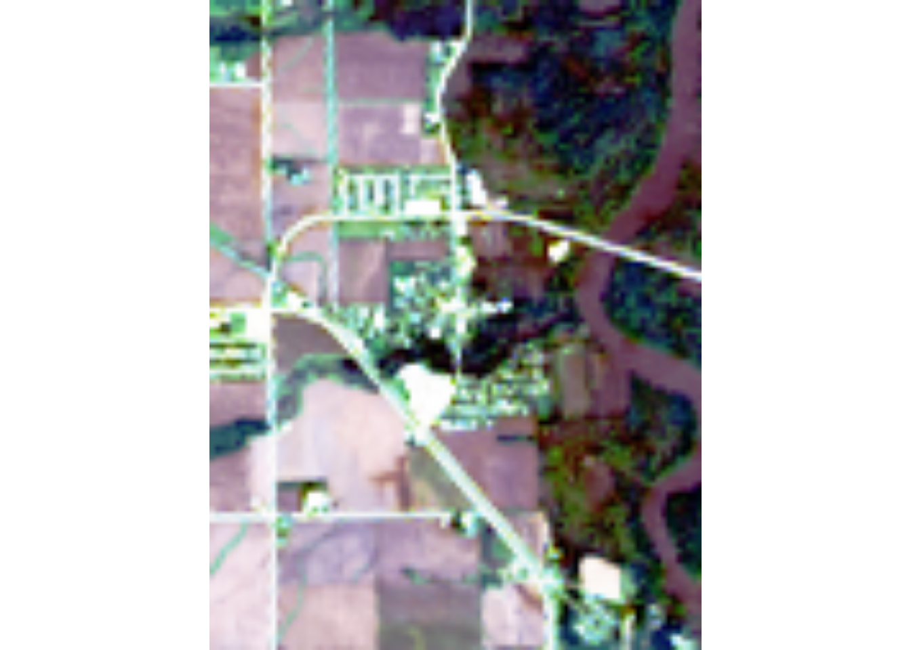
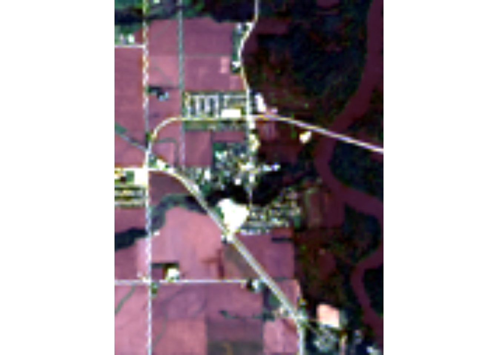
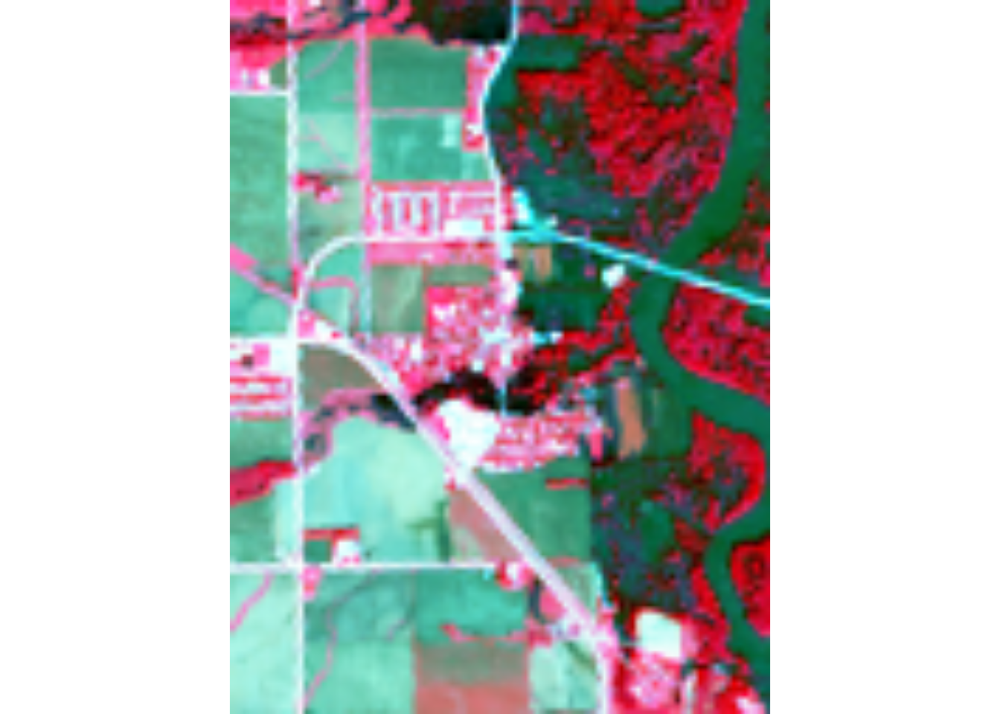
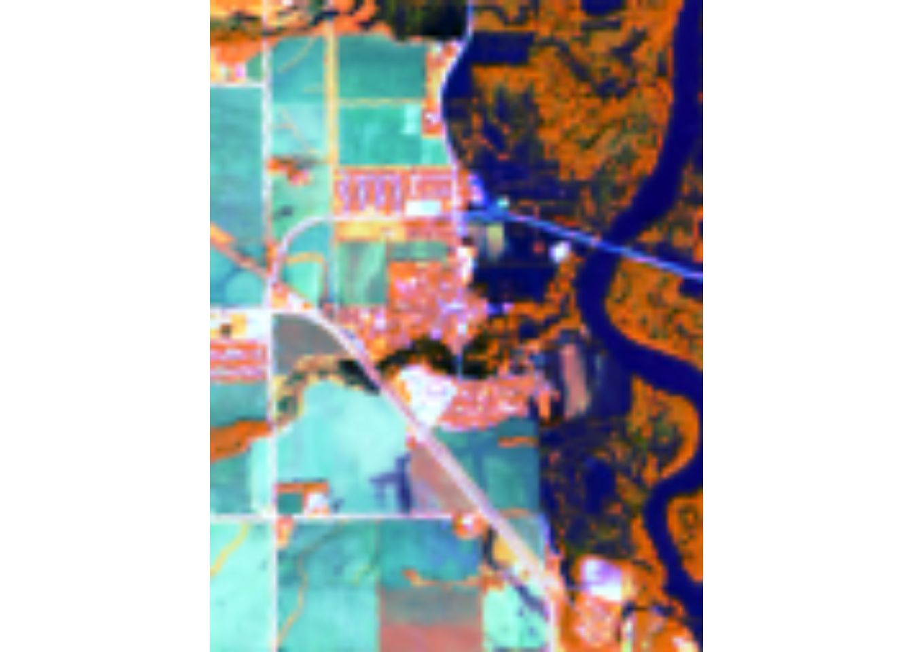
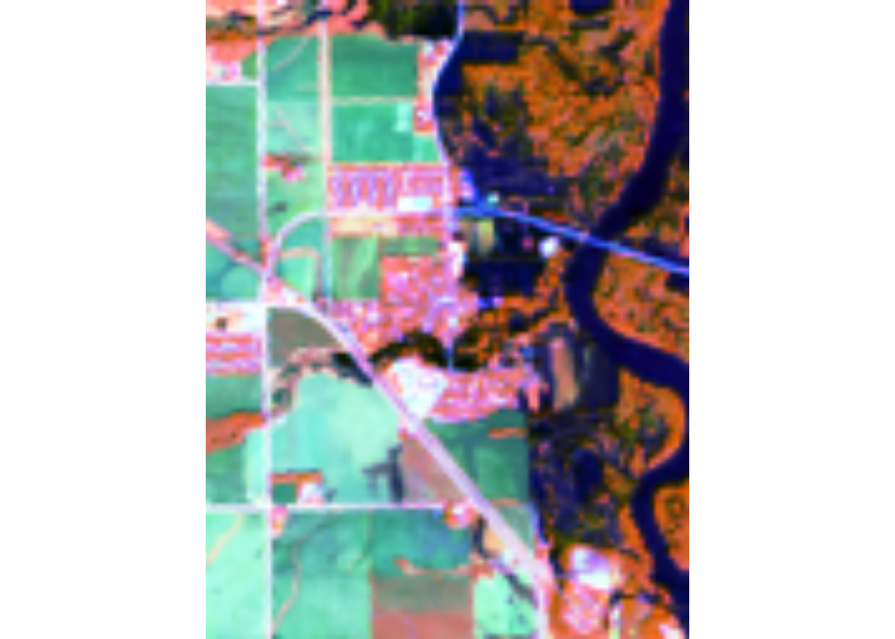
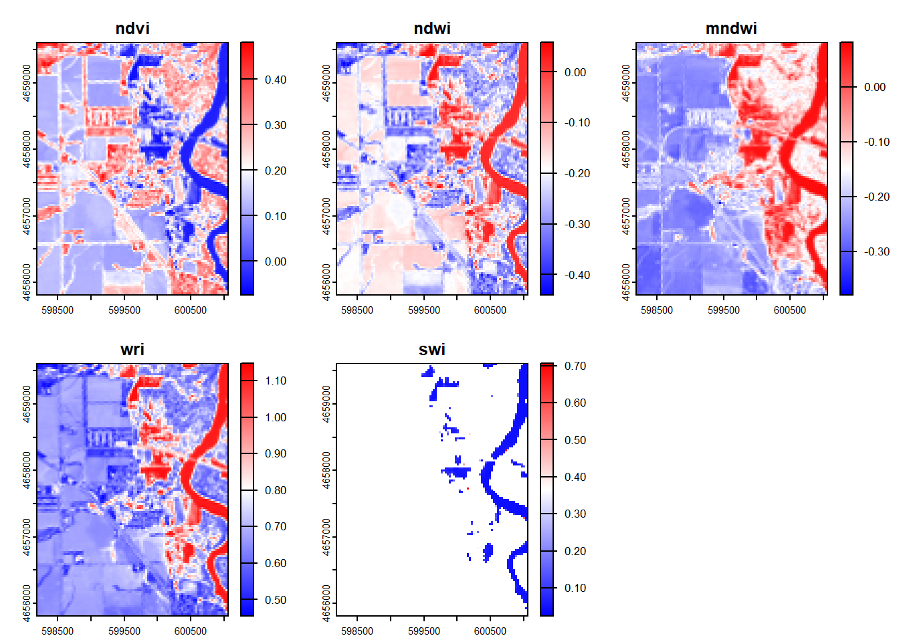
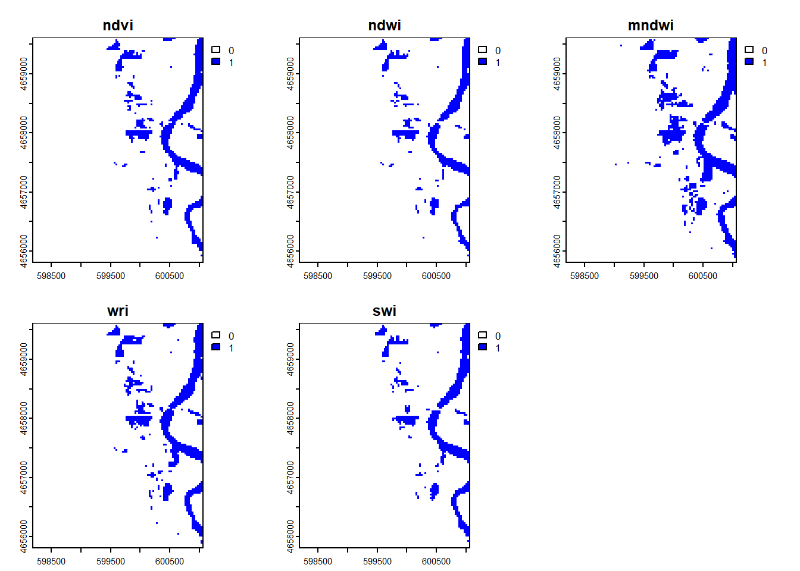

# download rasters that fit the setup query, bands, and save to output directoryassets_download(items = stac_query,asset_names = bands, output_dir ='data/landsat', overwrite =TRUE)
# list files downloaded from last code chunklist.files("data/landsat/landsat-c2/level-2/standard/oli-tirs/2016/025/031/LC08_L2SP_025031_20160926_20200906_02_T1", recursive =TRUE)
The dimensions are 7801 rows, 7681 columns, and 6 layers. The CRS is WGS 84 / UTM Zone 15N. The cell resolution is 30 x 30 meters.
Step 5: Analyze the images
# transform AOI to match CRS of Rasterspalo <-st_transform(palo, crs(raster_stack))
# crop rasters by palo AOIraster_crop <-crop(raster_stack, vect(palo))
# plot RGB bands with hist stretchplotRGB(raster_crop, r =4, g =3, b =2, stretch ="hist")

# plot RGB bands with lin stretchplotRGB(raster_crop, r =4, g =3, b =2, stretch ="lin")

# plot NIR,R,G bands with hist stretchplotRGB(raster_crop, r =5, g =4, b =3, stretch ="hist")

# plot NIR,SWIR1,R bands with hist stretchplotRGB(raster_crop, r =5, g =6, b =4, stretch ="hist")

# plot NIR,SWIR1,G bands with hist stretchplotRGB(raster_crop, r =5, g =6, b =3, stretch ="hist")

Each image highlights different landscape features by changing which bands are being plotted in which spot. RGB looks the closest to what we would see with our own eyes. NIR, R, G highlights the forested, wetland, and natural vegetation areas. NIR, SWIR1, R does highlight the water features. The NIR, SWIR1, G was similar but produced a different green on the farm fields.
# calculate and create SWI rasterswi_raster <-1/sqrt(raster_crop[["blue"]] - raster_crop[["swir16"]])
# combining index rasters from aboveindex_raster <-c(ndvi_raster, ndwi_raster, mndwi_raster, wri_raster, swi_raster)
# naming index rastersindex_raster <-setNames(index_raster, c("ndvi", "ndwi", "mndwi", "wri", "swi"))
plot(index_raster, col =colorRampPalette(c("blue", "white", "red"))(256))

All 5 images seems to do a great job of highlighting water features, but they are identifying them with different values. SWI completely removes anything that it has not identified as water. The other four seem to have slight variations of the difference in extent of water and vegetation near the river.
Step 2: Raster Thresholding
# Define a function to recode values to binary (1 = flooded, 0 = not flooded)# x = raster value, threshold = binary threshold, operator defines the ifelseflood_recode <-function(x, threshold =0.1, operator ="><") {# Apply ifelse based on the operatorif (operator =="<") {return(ifelse(x < threshold, 1, 0)) } elseif (operator ==">") {return(ifelse(x > threshold, 1, 0)) } elseif (operator =="<=") {return(ifelse(x <= threshold, 1, 0)) } elseif (operator ==">=") {return(ifelse(x >= threshold, 1, 0)) } elseif (operator =="==") {return(ifelse(x == threshold, 1, 0)) } elseif (operator =="0<") {return(ifelse((x < threshold & x >0), 1, 0)) } else {stop("Invalid operator. Use '<', '>', '<=', '>=', or '=='.") }}
# set names for each layer in the combined binaryflood_binary <-setNames(flood_binary, c("ndvi", "ndwi", "mndwi", "wri", "swi"))
# remove NAs from combined binary rasterremove_na <-function(x){ifelse(is.na(x), 0, x)}flood_binary <-app(flood_binary, remove_na)
# check for NAsfreq(flood_binary, value =NA)
layer value count
1 1 NA 0
2 2 NA 0
3 3 NA 0
4 4 NA 0
5 5 NA 0
# set colors for white = not flooded, blue = flooded# plot combined raster binarycolors <-c("white", "blue")plot(flood_binary, col = colors)

Step 3
Overall the binary rasters are very similar. MNDWI seems to have the most cells marked as flooded, and either NDWI or SWI seem to have the least cells.
Question 4
Step 1
# set random number seedset.seed(123)
Step 2
flood_bin <-values(flood_binary)dim(flood_binary)
[1] 127 96 5
These show a value of 0 or 1 for each cell based on the index classification that was performed earlier.
map <-mapview(flood_sum_copy, col.regions = blues9[3:9], # Blues palette for non-NA valueslayer.name ="Flood Sum", # Name for raster layeralpha.regions =0.7, # Slight transparencymap.types ="Esri.WorldImagery") +mapview(res_flooding_sf, col.regions ="red", # Red point for visibilitycex =5, # Point sizelayer.name ="Residential Flooding")# Display the mapmap